Trang này giúp bạn làm quen với các chức năng chính của ứng dụng Chiên Con.
Từ màn hình Home → chọn mục Chiên Con / Ấu Nhi / Thiếu Nhi / Nghĩa Sĩ (khoanh xanh).
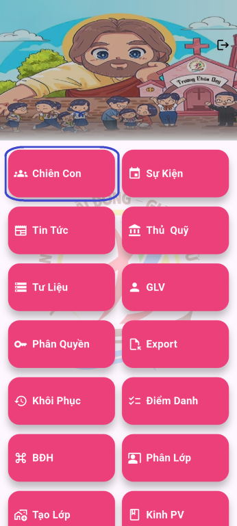
Danh sách các Chiên Con sẽ được hiển thị theo thứ tự Chiên Con nào được cập nhật thông tin gần nhất thì hiện lên đầu
+ Bấm vào nút ABC(Khoang vàng) để sắp xếp danh sách theo thứ tự A -> B -> C.
+ Bên dưới là danh sách các lớp (khoanh xanh). Bấm vào để xem Chiên Con và GLV của lớp đó.
+ Ta có thể tìm kiếm Chiên Con theo 3 tiêu chí. Tên Chiên Con / tên phụ huynh / ghi chú. chọn tiêu chí muốn tìm (khoanh xanh) và nhập từ khóa vào(khoanh vàng).
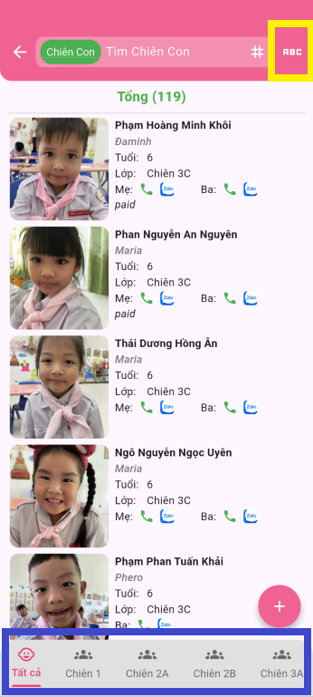
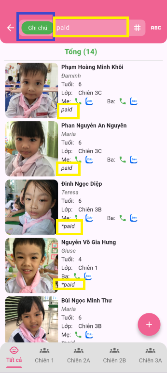
Bấm vào Chiên Con để xem thông tin chi tiết Chiên Con.
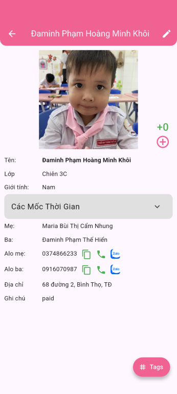
Thêm Chiên Con
Từ màn hình Home → chọn mục Chiên Con / Ấu Nhi / Thiếu Nhi / Nghĩa Sĩ (khoanh xanh).
Ở danh sách Chiên Con, bấm vào icon + hoặc 3 gạch ở góc phải dưới màn hình và chọn Thêm Chiên Con trong menu hiện ra.
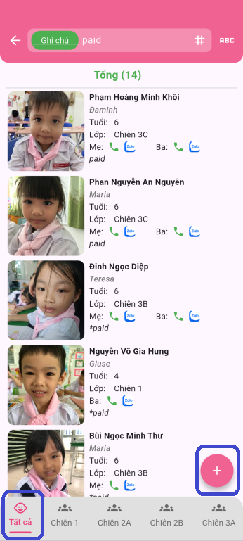
Hoặc
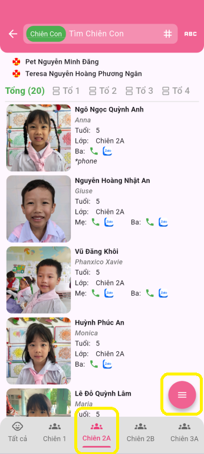
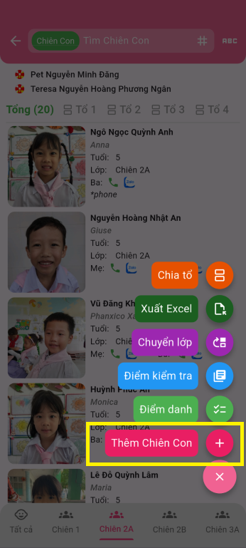
Điền thông tin Chiên Con mới và bấm nút Thêm.
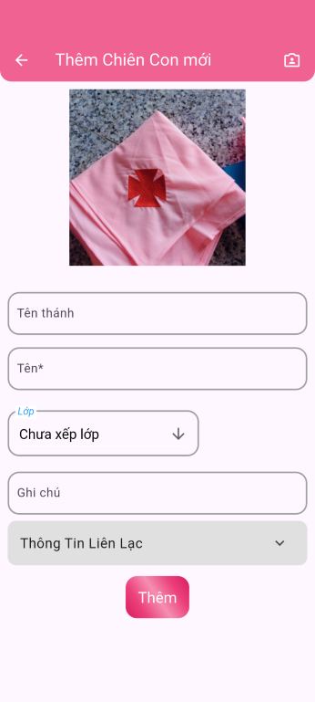
Cập nhật Chiên Con
Ở danh sách Chiên Con, bấm vào Chiên Con cần cập nhật. Thông tin chi tiết Chiên Con sẽ hiện ra.
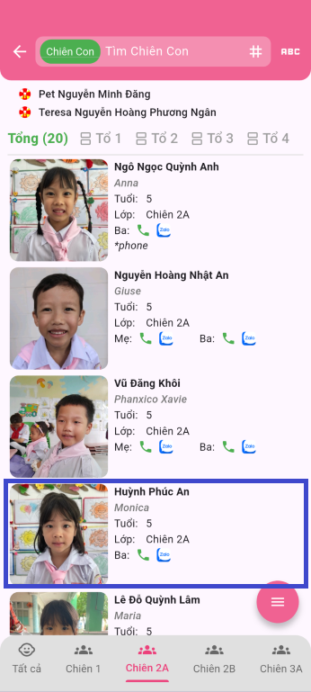
Bấm vào nút edit ở góc trên bên phải. Điền thông tin Chiên Con cần cập nhật và bấm nút Cập Nhật.
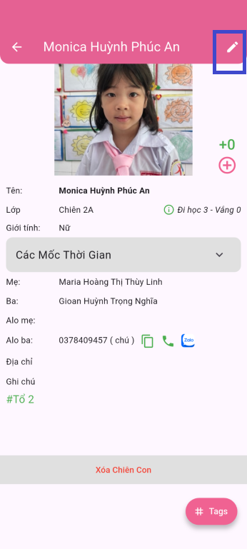
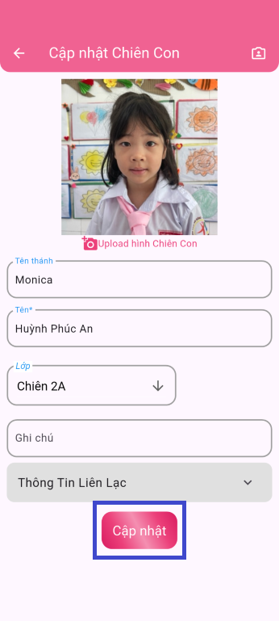
Xóa Chiên Con
Ở thông tin chi tiết Chiên Con kéo xuống dưới cùng sẽ hiện ra nút Xóa Chiên Con. Bấm vào để xóa Chiên Con.
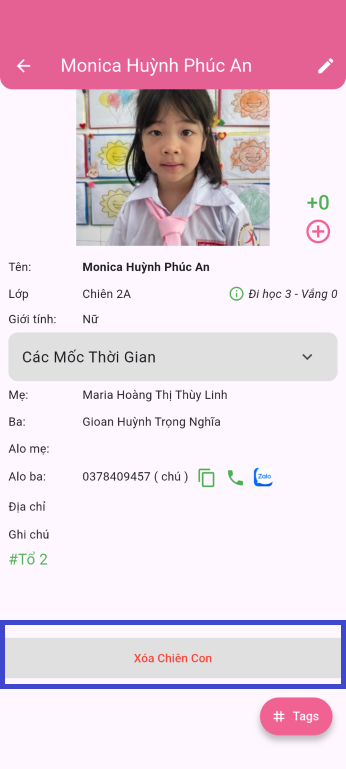
Ví dụ Điểm danh lớp Chiên Con 2A - ngày 10/10/2025
Tại màn hình danh sách lớp Chiên Con 2A. Bấm nút 3 gạch (khoanh vàng) và chọn Điểm danh (khoanh vàng).
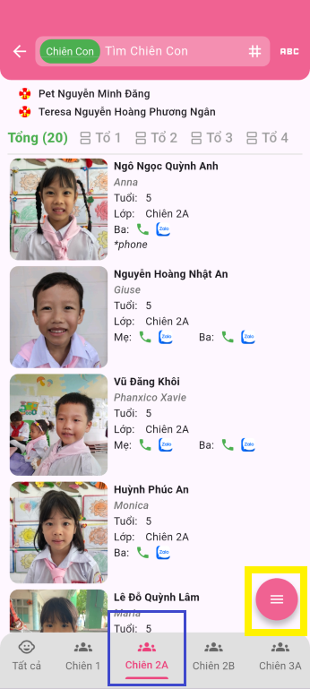
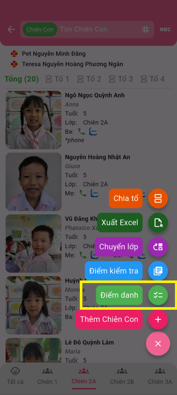
Tại màn hình danh sách các ngày đã điểm danh, bấm nút +(khoanh vàng) để tạo ngày điểm danh mới. Chọn sự kiện điểm danh, ngày điểm danh rồi bấm nút Điểm danh(khoanh vàng).
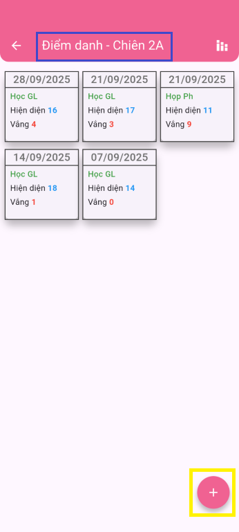
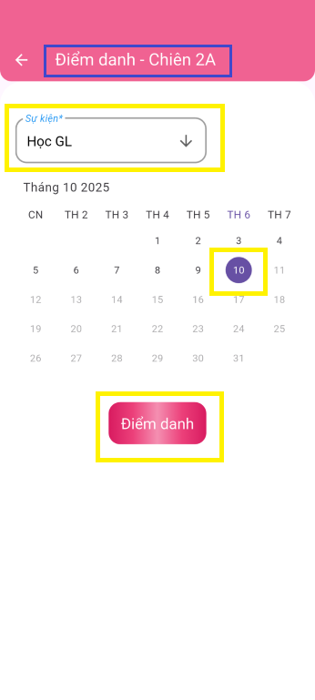
Sau khi đã tạo ngày điểm danh mới, app sẽ được đưa trở lại màn hình danh sách các ngày điểm danh. Nếu chưa thấy ngày điểm danh vừa tạo thì kéo xuống để load lại dữ liệu mới nhất cho màn hình này. Bấm vào ngày điểm danh vừa mới tạo để bắt đầu điểm danh Chiên Con có mặt ngày hôm đó.
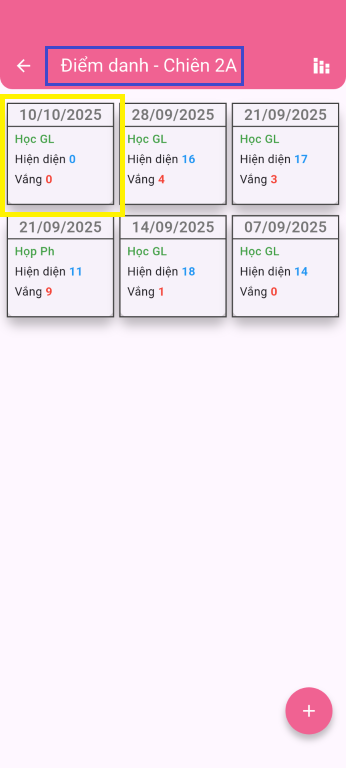
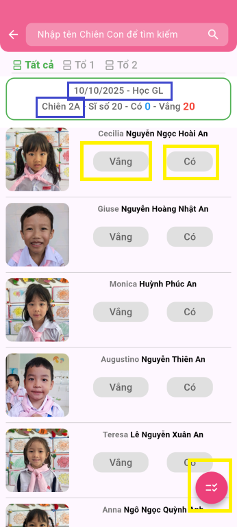
Ví dụ tạo Điểm kiểm tra 1 tiết ở Lớp Chiên Con 2A
Tại màn hình danh sách lớp Chiên Con 2A. Bấm nút 3 gạch (khoanh xanh) và chọn Điểm kiểm tra (khoanh xanh).
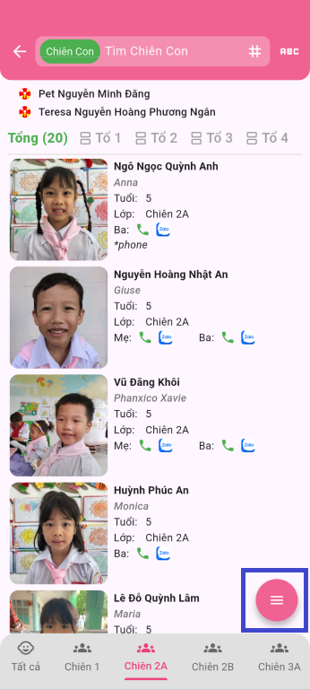
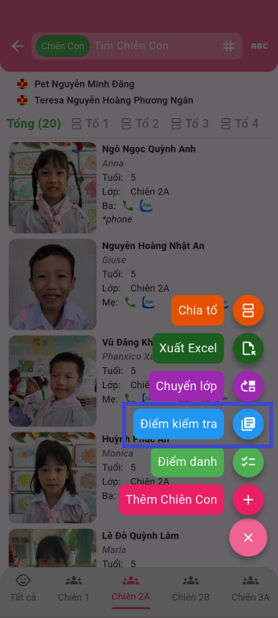
Tại màn hình Bảng điểm, bấm nút +(khoanh xanh) để tạo kỳ kiểm tra mới. Điền tên kỳ kiểm tra, ngày kiểm tra(bấm vào lịch để chọn ngày), Hệ số(để nhân lên tính điểm trung bình), rồi bấm nút Tạo mới(khoanh xanh).
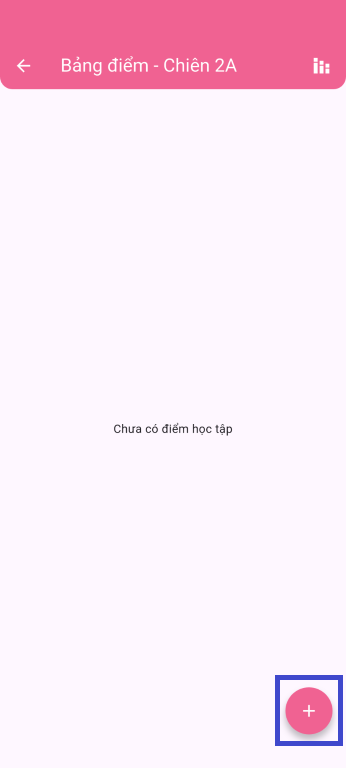
->
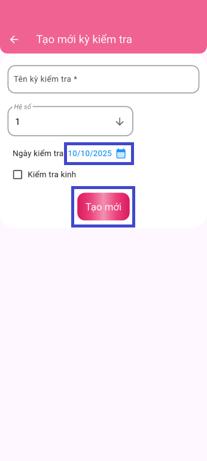
Sau khi đã tạo kỳ kiểm tra mới, app sẽ được đưa trở lại màn hình Bảng điểm. Nếu chưa thấy kỳ kiểm tra vừa tạo thì kéo xuống để load lại dữ liệu mới nhất cho màn hình này. Bấm vào kỳ kiểm tra vừa mới tạo để bắt đầu nhập điểm cho kỳ kiểm tra này.
-1: Nghĩa là mới tạo, chưa có nhập điểm.
icon màu đỏ: Điểm này chưa lưu lại. cần bấm vào để lưu điểm. Nên nhập tới đâu lưu tới đó tránh bị mất phải nhập lại.
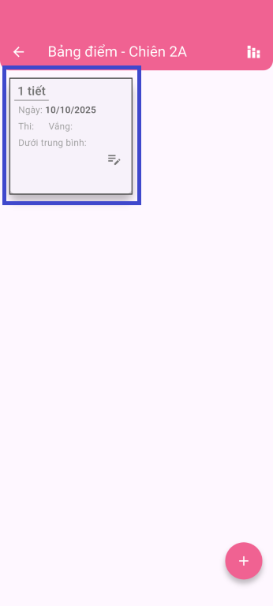
->
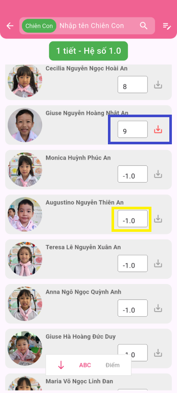
Tạo kỳ kiểm tra kinh (khảo kinh) ở Lớp Chiên Con 2A
Tại màn hình danh sách lớp Chiên Con 2A. Bấm nút 3 gạch (khoanh xanh) và chọn Điểm kiểm tra (khoanh xanh).
Tại màn hình Bảng điểm, bấm nút +(khoanh xanh) để tạo kỳ kiểm tra kinh. Điền tên kỳ kiểm tra, ngày kiểm tra(bấm vào lịch để chọn ngày), check vào Kiểm tra kinh, sau đó chọn các kinh cần kiểm tra, rồi bấm nút Tạo mới(khoanh xanh).
->
->
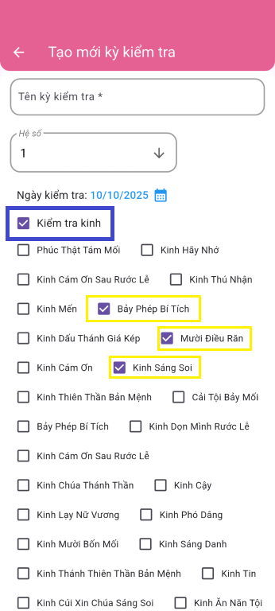
Sau khi đã tạo kỳ kiểm tra kinh, app sẽ được đưa trở lại màn hình Bảng điểm. Nếu chưa thấy kỳ kiểm tra kinh vừa tạo thì kéo xuống để load lại dữ liệu mới nhất cho màn hình này. Bấm vào kỳ kiểm tra kinh vừa mới tạo để bắt đầu nhập điểm cho kỳ kiểm tra này.
Điểm kinh tính theo phần trăm (%). 100 và 90 thì tính là thuộc kinh
1/3 kinh: Thuộc 1 kinh trên tổng số 3 kinh.
80%: Trung bình thuộc 80% trên tổng 3 kinh
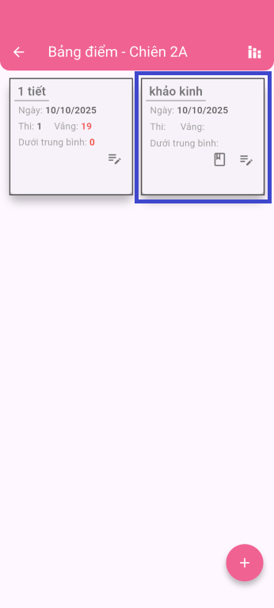
->
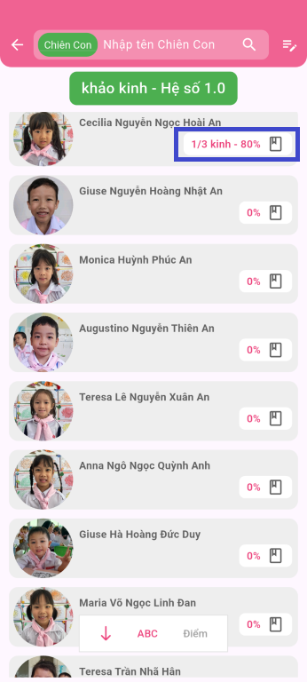
->
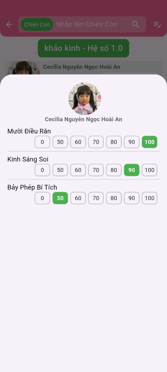
Tìm kiếm những Chiên Con chưa thuộc kinh Mười điều răn
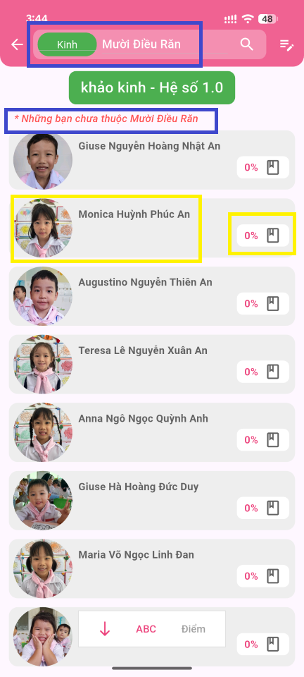
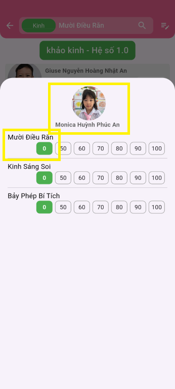
Tại màn hình danh sách lớp Chiên Con 2A. Bấm nút 3 gạch (khoanh xanh) và chọn Xuất Excel (khoanh xanh).
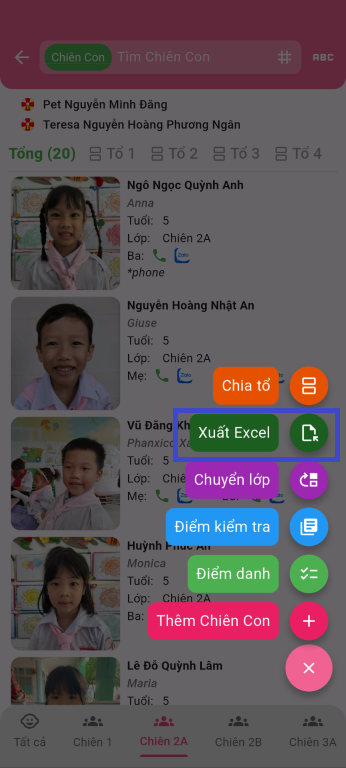
Tại màn hình Xuất Excel, bấm nút Export để xuất excel danh sách Chiên con lớp 2A.
Check vào Export theo ngành thì sẽ xuất excel danh sách Chiên con toàn ngành (tất cả các lớp).
Sau khi đã export thành công, file excel sẽ hiện ra, bấm vào để download về và mở ra xem. Cần phần mềm đọc file excel để xem, ví dụ ms excel, google sheets,...
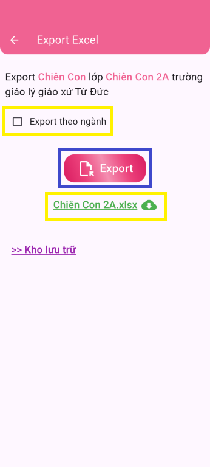
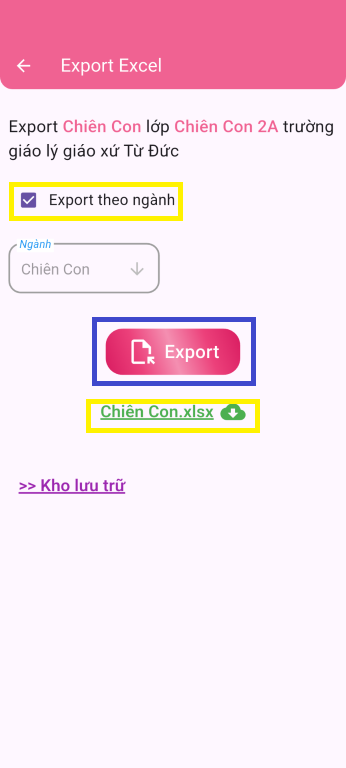
Tại màn hình danh sách lớp Chiên Con 2A. Bấm nút 3 gạch (khoanh vàng) và chọn Điểm danh (khoanh vàng).
Tại màn hình danh sách các ngày đã điểm danh, bấm nút Thống kê(khoanh vàng) Để vào xem thống kê tình hình đi học. Bấm tiếp nút Export để mở cửa sổ export Điểm danh(khoanh vàng).
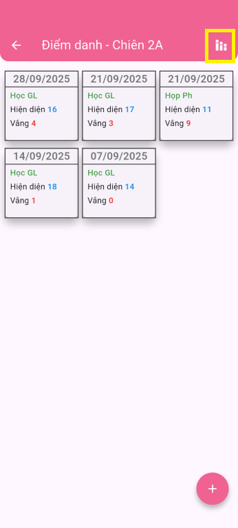
->
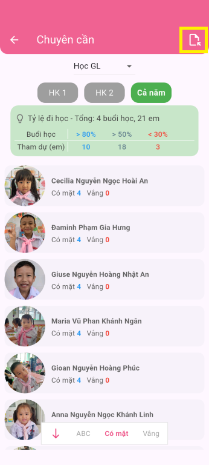
Trong cửa sổ export điểm danh, bấm nút Export.
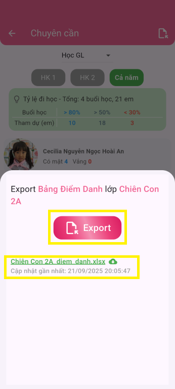
Tại màn hình danh sách lớp Chiên Con 2A. Bấm nút 3 gạch (khoanh xanh) và chọn Điểm kiểm tra (khoanh xanh).
Tại màn hình Bảng điểm, bấm nút Thống kê(khoanh xanh) Để vào xem thống kê điểm học giáo lý. Bấm tiếp nút Export để mở cửa sổ export Bảng điểm(khoanh xanh).